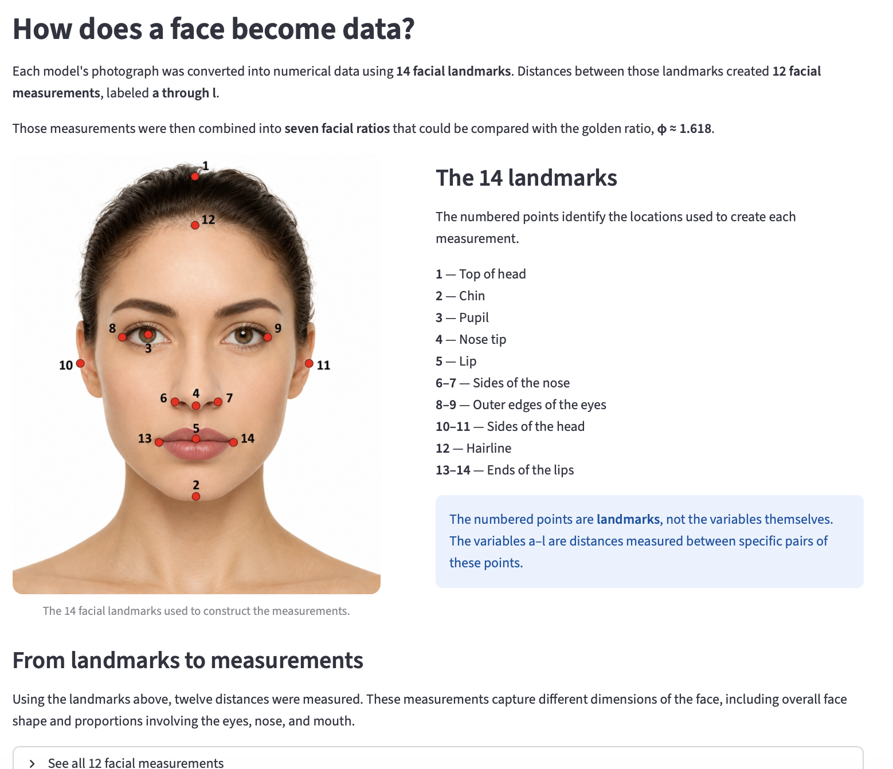
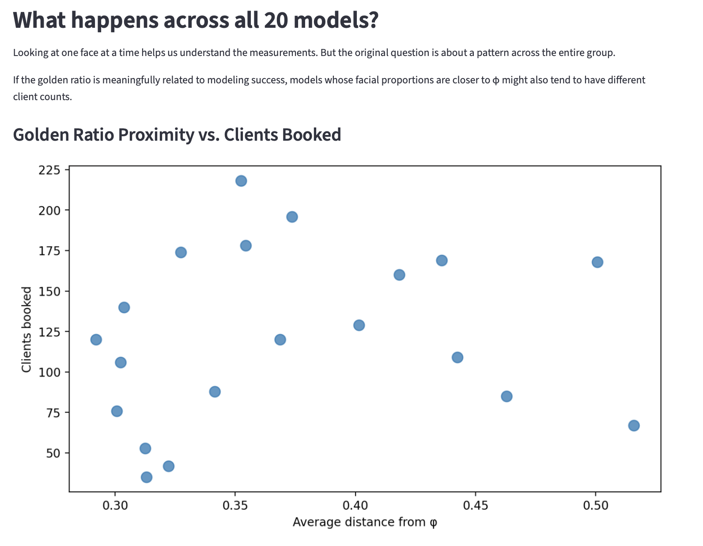
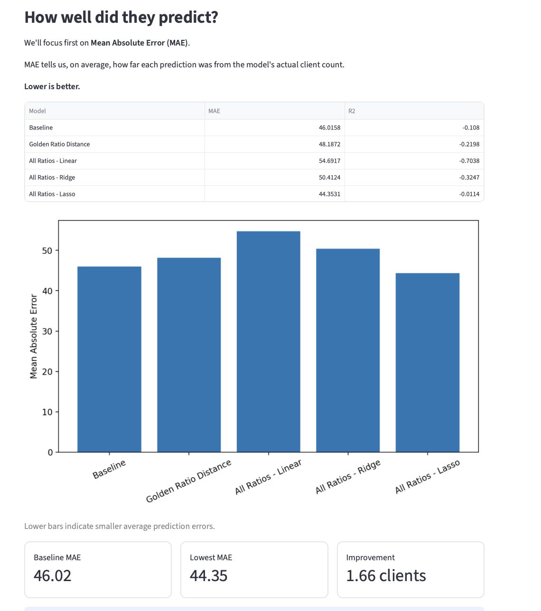
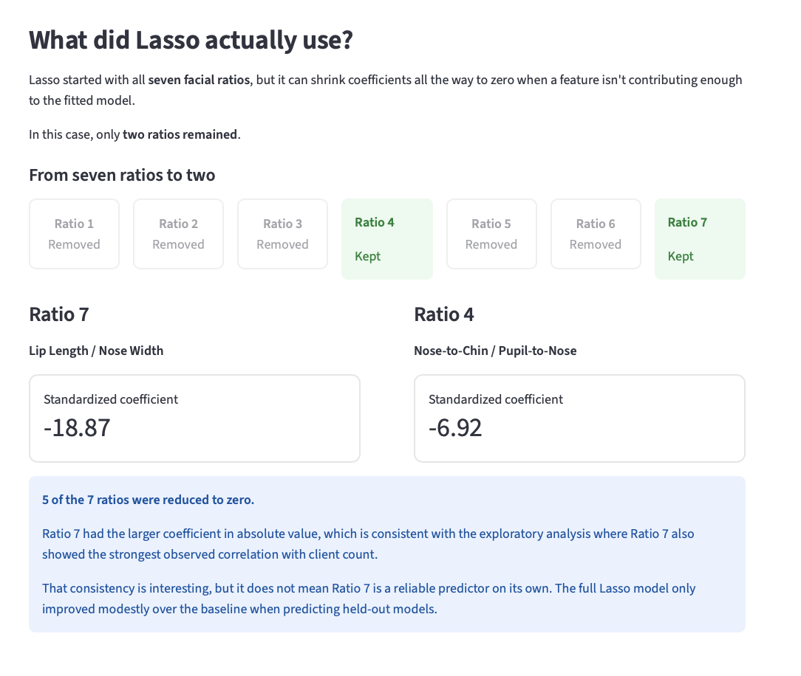

The Golden Ratio & Modeling
Can a mathematical proportion help explain success in fashion modeling?

I revisited an experiment I first explored years ago: whether fashion models whose facial proportions are closer to the golden ratio tend to book more clients. Using Python, I turned facial measurements into seven ratios and tested the idea through statistical analysis, regularized regression, leave-one-out cross-validation, and interactive visualization.
THE QUESTION →
Does proximity to the golden ratio actually relate to modeling success?
THE ANALYSIS →
Overall proximity to φ showed little relationship with client count. Looking at individual ratios revealed more interesting patterns, but finding a pattern and making a useful prediction are different questions.

THE RESULT →
The pattern was more interesting than the prediction.
The predictive model using Lasso produced the lowest prediction error, but only modestly improved over a simple baseline predicitve model. The data provides little evidence that facial proportions can reliably predict modeling success in this sample.

